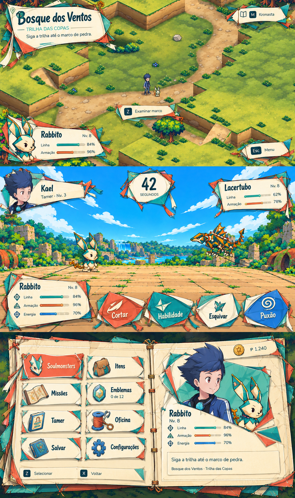
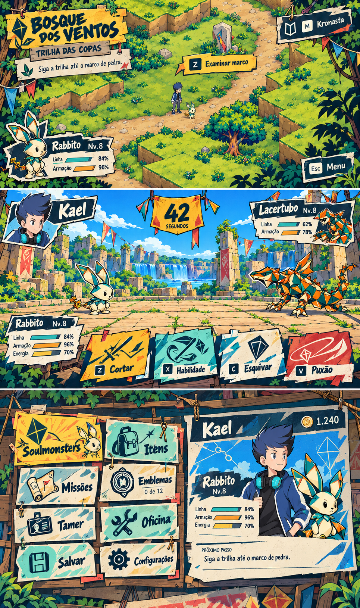
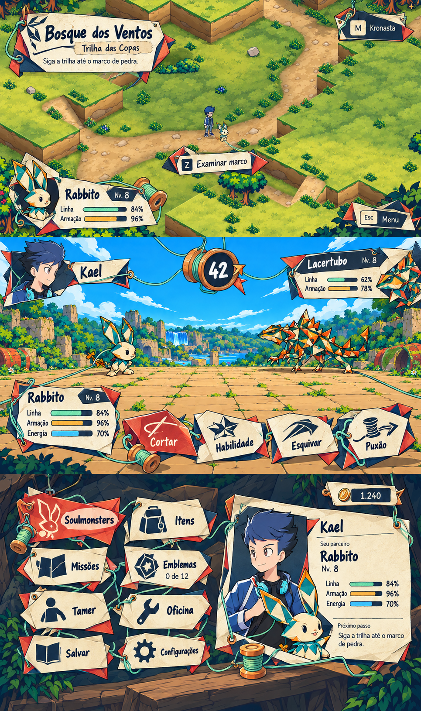

Direção escolhida: B — Mural de Kronasta. Preferência expressa pelo dono, adotada na PIP-129. Próxima etapa: sistema base ilustrado.
Concepts de arte, sem integração no jogo. As imagens foram geradas para explorar linguagem, formas e ilustração. Cenários, letras e detalhes de dados sofreram variações; não servem como prova de layout, input ou fidelidade ao save.
A / Seda viva
O estojo de quem faz pipas
Membranas coloridas, varetas, junções costuradas e rabiolas. A pausa abre como um folio de montagem; os ícones têm volume por desenho e sombra chapada.

Revisar excesso de pontas nas peças compactas e textura próxima ao texto. Prompt A
B / Mural de Kronasta
O bairro imprime sua presença
Chamada pintada, papel aplicado, cartazes personalizados e ícones em impressão de tinta. O menu vira um quadro comunitário de avisos, com áreas limpas para consulta.

Revisar excesso de bordas rasgadas e energia de campeonato no campo. Prompt B
C / Carretel e Elo
O percurso vira uma amarração
Etiquetas dobradas, um fio que liga escolhas, bobina de tempo e carretel ilustrado. As conexões passam a ter presença material, com cores organizadas e traço mangá.

Revisar quantidade de fios e bobinas para preservar foco e respiro. Prompt C
O que esta revisão muda
Os materiais agora definem silhueta, suporte, iconografia e composição. A construção deixa de depender apenas de cores e pequenos ornamentos sobre caixas. O traço usa contorno desenhado, sombra de cor chapada, dobras e reforços específicos da pipa.
Na implementação, texto e valores serão nativos e os desenhos serão peças separadas. Primeiro será definida a linguagem; depois ela será adaptada para leitura, margens e interação em cada resolução.